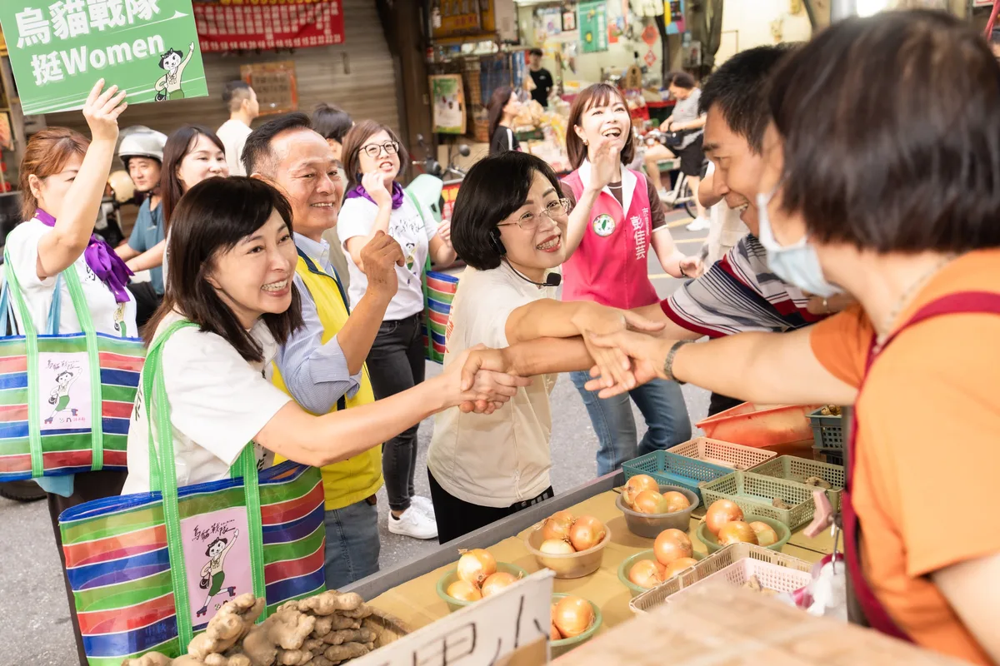
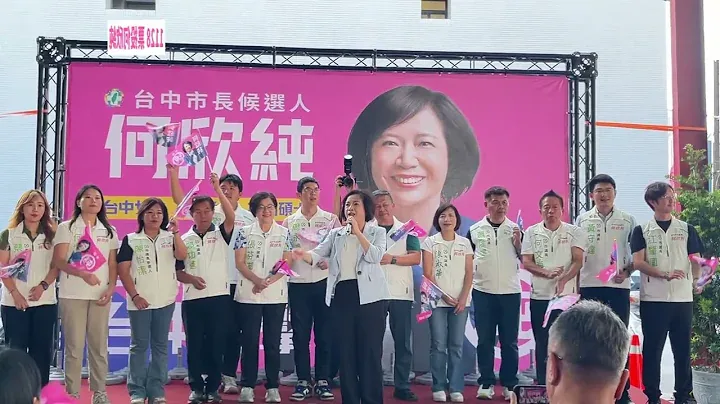
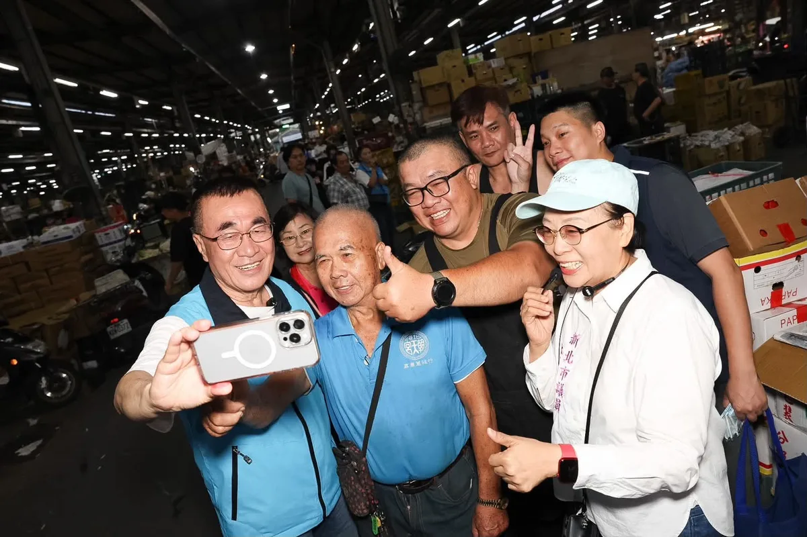

今晚趕到復興區，參加中秋晚會！ 感謝大家熱情的祝福跟鼓勵❤️ @choju_hsieh
Posts
今晚趕到復興區，參加中秋晚會！ 感謝大家熱情的祝福跟鼓勵❤️ @choju_hsieh


@su.chiaohui:倒數65天繼續衝！前進蘆洲黃昏市場！ 真的很高興每次來到蘆洲，都會受到大家滿滿的支持與鼓勵！謝謝今天黃昏市場熱情的大家，送我粽子、菜頭，要祝我✨包中好彩頭✨ 蘆洲正在快速發展中，未來我們要加速推動蘆南蘆北重劃區、蘆洲醫院，也要緊盯捷運環狀線北環段工程進度，讓蘆洲市民生活便捷、更舒適！ 今天也特別感謝 @dpp_gender_equality 烏貓戰隊許多姊姊妹妹站出來，和新北隊一起掃街！我會繼續匯聚各方力量，帶領新北迎向新時代！
倒數65天繼續衝！前進 #蘆洲黃昏市場 真的很高興每次來到蘆洲，都會受到大家滿滿的支持與鼓勵！謝謝今天黃昏市場熱情的大家，送我粽子、菜頭，要祝我 #包中好彩頭！ 蘆洲正在快速發展中，未來我們要加速推動蘆南蘆北重劃區、蘆洲醫院，也要緊盯捷運環狀線北環段工程進度，讓蘆洲市民生活便捷、更舒適！ 今天也特別感謝 @dpp_gender_equality #烏貓戰隊 許多姊姊妹妹站出來，和新北隊一起掃街！我會繼續匯聚各方力量，帶領新北迎向新時代！

恭祝 #新莊慈祐宮 建廟340週年！感謝 @william_chingte 總統親自贈匾祝福！ 賴清德總統今天親自來我們新莊慈祐宮贈送 #霖雨溥化 賀匾，感謝新莊慈祐宮長年庇佑地方，我們也一同參香祈福，誠心祈求國泰民安、風調雨順。 新莊不只有豐厚的人文、信仰和文化底蘊，更有 #國家電影中心，未來有機會成為聚集「金鐘、金曲、金馬」的 #三金博物館。 今天也感謝數百位台南鄉親一起為我加油，未來我們要串聯新北、台南的半導體與AI產業，並結合新北的山海資源與台南的歷史文化，深化觀光合作，讓兩座城市一起升級！ 感謝賴總統今天親自來為新北隊加油打氣，未來我也期盼有機會帶領新北隊，不只讓新莊的文化故事被更多人認識，也要吸引更多人來到新北，看見這裡的多元和美好。

何欣純喊話29區台中隊 六星市政拚全國第一！

@schuanglawyer:黃世杰南桃園競選總部成立大會，就在下週六！ 賴清德總統將來到現場，還有董事長樂團 、雷昇傳藝劇團 、無双樂團，帶來精彩演出！ 邀請您杰伴同行，成為改變桃園的力量，一起讓心桃園動起來💖 📌時間｜10/3（六）18:00進場 📌地點｜中壢區環中東路、後興路二段周邊空地


🌕中秋節前夕相聚，攜手做高雄堅強後盾 中秋佳節將屆，在這團圓、感恩的時刻，與市民朋友相聚，深深感受到高雄這座城市的溫暖和凝聚力，大家在各自的崗位上，為高雄的進步默默付出。 「由服務驅動、以價值觀團結」，是國際獅子會的核心精神。感謝300E-5區五福獅子會吳信霈會長相邀，獅友們長期扎根服務，是社會安定的重要力量。 而說到撐起高雄發展，必定有我廣大勞工兄弟姐妹。 在高雄市總工會秋節餐敘上，我向林明章理事長以及在座所有兄弟姐妹表達敬意。勞工是高雄經濟轉型的基石，我會持續爭取提升勞工權益，讓大家有更安全、更有保障的就業環境。 信仰，是支持我們大步向前的力量。 來到前鎮慈德宮參加金府千歲聖誕平安宴，感謝林金藝主委三十多年來的用心護持。前鎮這幾年的蛻變有目共睹，從81億元的前鎮漁港大改造，到亞灣區智慧公宅、黃線捷運的推動。我會接棒延續這些重大建設，讓前鎮的風華再次展現。 來到小港大坪頂無極主公殿參加平安宴，感謝梁敬德主委的用心，一同向廣澤尊王祈求國泰民安。小港是高雄的南大門，我會全力督促捷運小港林園線、國道七號貨櫃專用道如期完工，改善沿海路的交通安全，給小港居民一個更安全、更進步的生活環境。 從民間社團、勞工體系到基層宮廟，每一股力量都是推動高雄向前的關鍵，我會帶著這份感恩的心，把大家的期盼化為具體的施政成績，我們一起打拚，讓高雄成為更宜居、更繁榮的偉大城市！ 敬祝中秋佳節愉快、闔家平安！ 高雄小金剛許智傑 林岱樺 黃彥毓 前鎮小港 我願意 黃文益 高雄市議員 市議員李順進 尹立 左營楠梓市議員參選人 吳昱鋒-科技先鋒 李雅慧 高雄市議員 服務團隊 鄭光峰 高雄市議員 服務團隊 陳致中 Chih-Chung Chen 服務團隊
何欣純專訪-安全，是台中市民的想望！安心，是何欣純要來打造的生活環境建議！新台中，就交給何欣純！

桃園是國門之都，有山有海，有鄉村也有都會，我們是全國工業產值第一的城市，產業鏈完整多元。這裡有引領世界潮流的AI、科技、電腦產業，也有傳統的汽車、機械、食品產業。百工百業在桃園，都有蓬勃發展的機會。 感謝民進黨主席賴清德總統，今天移師桃園舉辦行動中常會，我要向大家報告，我的家鄉桃園擁有獨一無二的優勢，更匯聚了大家對未來的無限期待。升格直轄市以來，我們的人口增加超過30萬。 然而，隨著人口迅速成長，建設的速度，卻明顯跟不上城市發展的腳步。 這段時間，我走遍桃園各區，聽見市民對於改變現狀的渴望，也看見這座城市的各種可能，以及被壓抑的巨大潛能。 我深知，現在的桃園正站在關鍵十字路口。市長作為市政發動機、民意接收站，需要「心在桃園、根在桃園」，唯有真正了解地方需求的人，才能帶領這座城市向前。 從產業升級、交通改善、醫療平權，到青年支持、藝文發展與運動環境，針對桃園此刻的各項不足，我已經準備好全方位的具體解方，要用扎實的政策，驅動這座城市大步向前！ 手上這一票，決定了接下來四年，桃園要向世界訴說什麼樣的故事。 我是在地子弟黃世杰，我受這片土地栽培，我的心在桃園，成家立業也在桃園，桃園是我的家鄉，是我實踐夢想的地方。 我有決心、更有行動力，我們要匯聚最大的力量，把過去三年多的停滯，化作未來三十年的爆發力。讓真正準備好的市長，帶領桃園迎向光榮、走向世界、奔向未來！ 11/28懇請支持黃世杰，支持桃園隊全壘打！ 一起找回令人動心的城市，讓心桃園動起來💖


實體の「市長，你給我聽好了！」第二場來了！ ⠀ ‼️西門町出沒確認‼️ ⠀ 限定快閃，你敢出題，我就接招！ ⠀ 無論你支持什麼政黨，我都想聽你對台北的想法。 到現場寫下你的主張，就有機會站上發言台，直接和沈伯洋對話。 ⠀ 地點｜捷運西門站6號出口 日期｜2026年9月23日（今天） ⠀ 17:00 開放填寫提案單 18:15 快閃發言台正式開張

@a_chun1973:台中超多超厲害的！連假來台中走走吧！ 中秋、教師結連假，敬祝平安愉快喔！ 新台中，就交給何欣純！ 嚴禁酒駕 未成年不得飲酒

@schuanglawyer:法律人杰伴同行 .ᐟ 律師後援會成立⚖️ 桃園的公共事務，需要更多法律專業的律師朋友交流與參與！10/16(五)邀請法律界律師夥伴齊聚，分享對桃園城市發展、公共政策與法治議題的觀察與想法💡 法律人杰伴交流，為桃園帶來更多專業觀點！ 【律師後援會成立 .ᐟ 】 活動時間｜10/16（五） 參加資格｜限具律師身分者 報名方式｜採事前報名制 報名連結請見留言👇🏻

@chen_tingfei:《妃行日記》出發！🏃🏻♀️💨 大家平常看到我，不是在活動現場，就是在趕往下一個行程的路上 所以決定帶大家看看候選人的一天，到底都在忙些什麼👀 跟著妃姐，跑遍台南！🚗🏘️

百家宗教團體，匯聚高雄最溫暖的力量 響應善心，#今年選舉補助款全數捐出！ 今天與 陳其邁 Chen Chi-Mai 市長、市府團隊及宗教界朋友齊聚，向今年獲得績優表揚的109家宗教團體表達感謝。大家捐資總額達9億7千萬元，投入急難救助、獎助學金、弱勢關懷與醫療照護，把慈悲化為行動，在許多家庭最需要幫助的時候，及時伸出援手。 宗教是安定人心的力量，也是支持社會的重要依靠，高雄的溫暖與韌性，正是來自長年默默付出的身影。特別恭喜宗教後援會總會長、意誠堂關帝廟 ＃洪榮豊 主委獲獎，也感謝副總會長 ＃李政翰 今天代表高雄市道教會出席，大家長年深耕地方，最了解鄉親的需要，也是市府推動社會關懷的重要夥伴。 看見宗教界長年付出愛心，我也不能落後，2024年我將立委選舉補助款全數捐出，今天我也在現場宣布，本次市長選舉補助款也會全數用於社會公益。 信仰各有不同，關懷這片土地的心意卻是相通的。公益不分黨派，助人不問立場，未來我和高雄隊會持續與宗教界攜手，讓民間善意與公共照顧相互支持，陪伴更多家庭度過難關，讓高雄的善與溫暖不斷延續。 康裕成 高雄市議長 何權峰 高雄市議員 邱俊憲 高雄市議員陳慧文 高雄市議員高雄市議員郭建盟 湯詠瑜 詠瑜新選擇 張勝富 高雄市議員 江瑞鴻 高雄市議員 尹立 左營楠梓市議員參選人 理想青年 張以理 李昆澤服務團隊 黃捷服務團隊 高雄小金剛許智傑服務團隊 黃飛鳳-做就對了 服務團隊 曾俊傑服務團隊 鄭孟洳服務團隊
29區台中隊集結！何欣純一起拚出台中首都格局🔥

黃世杰南桃園競選總部成立大會，就在下週六！ 賴清德總統 @william_chingte 將來到現場，還有董事長樂團 @thechairman_tw 、雷昇傳藝劇團 @leishengartgroup_1997 、無双樂團 musouband ，帶來精彩演出！ 邀請您杰伴同行，成為改變桃園的力量，一起讓心桃園動起來💖 📌時間｜10/3（六）18:00進場 📌地點｜中壢區環中東路、後興路二段周邊空地

@pumashen:回到從小長大的五分埔掃街 路上遇到的商家都好熱情 還意外完成「沈家族大合照」😂 途中看到兩位長輩不慎跌倒 我趕快上前關心 還好都沒有大礙 後續也請志工陪同觀察 請助理留下名片 有需要都可以隨時聯絡我們 謝謝大家的支持 請大家回家注意安全 平安最重要 選舉很重要，安全更重要 大家都要平平安安回家！
@a_chun1973:安全，是台中市民的想望！ 安心，是何欣純要來打造的生活環境建議！ 新台中，就交給何欣純！

Lighting！青春來挺✨ 國務青夥伴來到高雄瑞豐夜市，向市民誠心推薦 @dpp_taiwan 民主進步黨高雄市長候選人 @zenolai 賴瑞隆。未來，賴瑞隆將帶著豐富的中央與地方實務經驗，帶領高雄邁向下一個黃金十年！ 請高雄的市民朋友，11月28日（六）唯一支持：賴瑞隆！

@pumashen:實體の「市長，你給我聽好了！」第二場來了！ ⠀ ‼️西門町出沒確認‼️ ⠀ 限定快閃，你敢出題，我就接招！ ⠀ 無論你支持什麼政黨，我都想聽你對台北的想法。 到現場寫下你的主張，就有機會站上發言台，直接和沈伯洋對話。 ⠀ 地點｜捷運西門站6號出口 日期｜2026年9月23日（今天） ⠀ 17:00 開放填寫提案單 18:15 快閃發言台正式開張

大家似乎很喜歡我Rap, 那就再來一首安可曲😂，並邀請到未來的市長 @hammer__lee ！川流不息！ #中秋佳節愉快

法律人杰伴同行 .ᐟ 律師後援會成立⚖️ 桃園的公共事務，需要更多法律專業的律師朋友交流與參與！10/16(五)邀請法律界律師夥伴齊聚，分享對桃園城市發展、公共政策與法治議題的觀察與想法💡 法律人杰伴交流，為桃園帶來更多專業觀點！ 【律師後援會成立 .ᐟ 】 活動時間｜10/16（五） 參加資格｜限具律師身分者 報名方式｜採事前報名制 報名連結請見留言👇🏻

前鎮漁港需要務實對策，不需要「先唱衰、再收割」！ 前鎮漁港是世界級的遠洋漁港，漁獲佔全台九成，前鎮漁港的發展與漁民權益，是我長期關心推動，五大建設81億爭取到位，許多細項也多次召開協調會處理，攤商與船員關切的事項，中央、地方早處理拍板定案。 9月17日，我陪同行政院秘書長 張惇涵 Chang Tun-Han 、農業部長陳駿季實地視察，並與陳其邁市長共同討論，漁業署確定公布「兩年試營運計畫」： ✅ 運銷中心攤商兩年免費進駐，依衛生標準與使用需求調整動線、降溫及攤位設備。 ✅ 船員住宿費再爭取降至100元，餘額協調由船東負擔，外籍漁工等同免費入住。 ✅ 改善船員大樓供水、異味、隔音，持續爭取增加接駁公車班次，回應實際需求。 今年度預算藍白主提凍結「漁業發展」預算1000萬元、凍結「漁業管理」預算2000萬元，民眾黨團也凍結7581萬的漁業相關預算。相關言行漁民及高雄市民都看在眼裡。 「高雄城市轉型沒有退路」，前鎮漁港啟用超過50年，才好不容易爭取到81億元經費翻新整建，追求的是遠洋漁業升級的寶貴機會。高雄需要的是能夠解決問題的市長，讓城市持續升級的市長，我會持續盯緊改善進度，讓攤商安心做生意、船員安心休息，回應所有漁民的期待。

@hammer__lee:清晨五點鐘與攤商的自拍，眼睛不只張得開，還閃閃發光，讓一早活力滿滿有夠嗨。 今天一早，我來到蘆洲大台北果菜市場，向攤商與民眾打招呼，說實在，我看了很感動，沒有他們，哪裡來我們的溫飽。 攤商的勤樸，每個人都是穩定社會的力量。 感動是蘆洲鄉親給我的，不管外頭天亮了沒，市民的熱情如火，用力抱緊我，讓我敢於做自我。 有人說我自拍越來越上手，我要說這都是市民朋友訓練出來的，謝謝每一位拿著手機與我合照的鄉親，感動我的心。 每一回到市場走走，我的耳朵都要張很大，因為有不少鄉親會對我說悄悄話，有人告訴我顧聲音的小撇步，有人很簡單，只是要說一聲加油。 一些看似反應不大的攤商，其實在我靠近時，都會在我耳邊說「川伯你一定要贏喔」、「川伯一定要加油喔」。還有那些，就算手在忙著切豬肉、刮魚鱗的好友們，他們還是會為我喊「一定支持你」。 更有趣的是，我碰上了「四川的兒子」，有位可愛鄉親對我說「我的爸爸也叫李四川」，說實在，那一刻，我覺得榮幸。 我們一起在新北生活，一起為蘆洲拚命，那是三生有幸。
立院臺中隊，全員集結完畢！ 去年，憑著臺中人骨子裡的理性與正義感，我們並肩走過最艱難的考驗。 這一次，為了這座城市的下一代，我們要再度凝聚、勇敢站出來！ 邀請所有熱愛臺中的鄉親好朋友，作夥站出來加入「#臺中隊」，一起把臺中推向臺灣最驕傲的旗艦城市！ 【臺中市長候選人 江啟臣競選總部成立大會】 時間｜10月4日（日）上午09:00 地點｜市政北一路、惠來路二段路口（歡迎轉發相揪！） 作夥拚、繼續衝，10/04 我們現場不見不散！

黃世杰南桃園競選總部成立大會，就在下週六！ 賴清德總統將來到現場，還有董事長樂團、雷昇傳藝劇團 Lei Sheng Art Group、無双樂團，帶來精彩演出！ 邀請您杰伴同行，成為改變桃園的力量，一起讓心桃園動起來💖 📌時間｜10/3（六）18:00進場 📌地點｜中壢區環中東路、後興路二段周邊空地
安全，是台中市民的想望！ 安心，是何欣純要來打造的生活環境建議！ 新台中，就交給何欣純！

@schuanglawyer:我是在地子弟黃世杰，我受這片土地栽培，我的心在桃園，成家立業也在桃園，桃園是我的家鄉，是我實踐夢想的地方。 這段時間，我走遍桃園各區，聽見市民對於改變現狀的渴望，也看見這座城市的各種可能，以及被壓抑的巨大潛能。 我深知，現在的桃園正站在關鍵十字路口。市長作為市政發動機、民意接收站，需要「心在桃園、根在桃園」，唯有真正了解地方需求的人，才能帶領這座城市向前。 感謝民進黨主席賴清德總統 @william_chingte ，今天移師桃園舉辦行動中常會，我要向大家報告，我的家鄉桃園擁有獨一無二的優勢，更匯聚了大家對未來的無限期待。 我有決心、更有行動力，我們要匯聚最大的力量，把過去三年多的停滯，化作未來三十年的爆發力。讓真正準備好的市長，帶領桃園迎向光榮、走向世界、奔向未來！ 11/28懇請支持黃世杰，支持桃園隊全壘打！一起找回令人動心的城市，讓心桃園動起來💖


Spokesperson live-streaming, Professor Ke brings them a "surprise". #KeChihEn #CommonGoals #Kaohs...

實體の「市長，你給我聽好了！」第二場來了！ ⠀ ‼️西門町出沒確認‼️ ⠀ 限定快閃，你敢出題，我就接招！ ⠀ 無論你支持什麼政黨，我都想聽你對台北的想法。 到現場寫下你的主張，就有機會站上發言台，直接和沈伯洋對話。 ⠀ 地點｜捷運西門站6號出口 日期｜2026年9月23日（今天） ⠀ 17:00 開放填寫提案單 18:15 快閃發言台正式開張